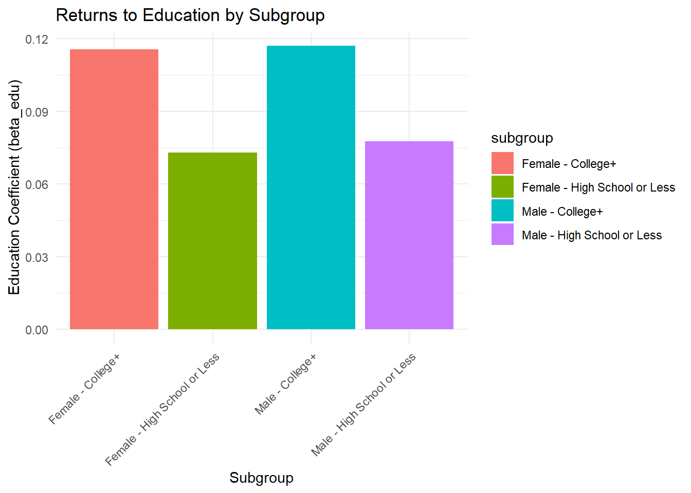
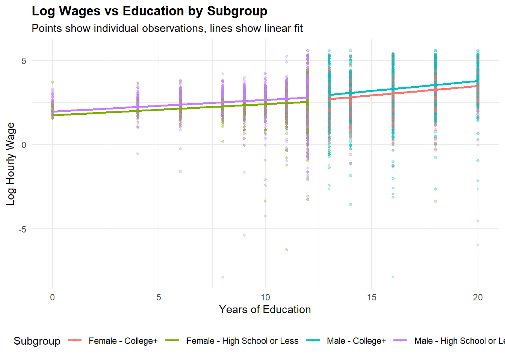
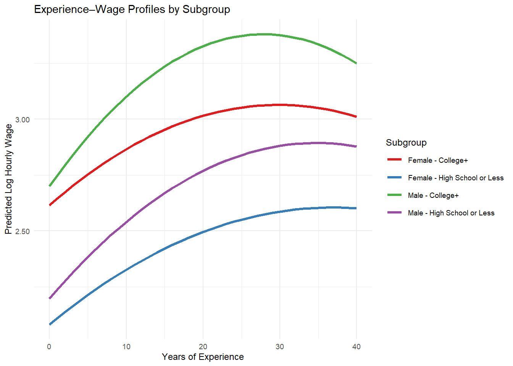
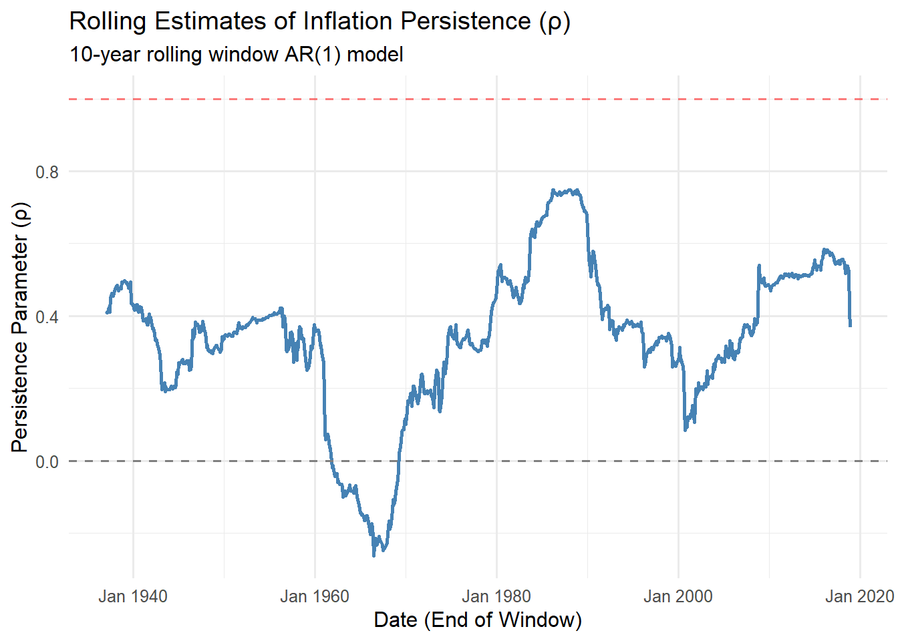

#Claire Benson - This homework is a coding assignment. Please follow the instructions to complete the tasks. - Use Quarto/Knitr chunks for all work. - Turn in the rendered HTML and your .qmd source via Canvas.
0. Setup - DONE
set.seed(123) # You may load packages you plan to use (optional):library(tidyverse)library(readxl)options(repos =c(CRAN ="https://cloud.r-project.org/"))install.packages("zoo")
package 'zoo' successfully unpacked and MD5 sums checked
Warning: cannot remove prior installation of package 'zoo'
Warning in file.copy(savedcopy, lib, recursive = TRUE): problem copying
C:\Users\Claire\AppData\Local\R\win-library\4.5\00LOCK\zoo\libs\x64\zoo.dll to
C:\Users\Claire\AppData\Local\R\win-library\4.5\zoo\libs\x64\zoo.dll:
Permission denied
Warning: restored 'zoo'
The downloaded binary packages are in
C:\Users\Claire\AppData\Local\Temp\RtmpozMtCy\downloaded_packages
package 'forecast' successfully unpacked and MD5 sums checked
Warning: cannot remove prior installation of package 'forecast'
Warning in file.copy(savedcopy, lib, recursive = TRUE): problem copying
C:\Users\Claire\AppData\Local\R\win-library\4.5\00LOCK\forecast\libs\x64\forecast.dll
to
C:\Users\Claire\AppData\Local\R\win-library\4.5\forecast\libs\x64\forecast.dll:
Permission denied
Warning: restored 'forecast'
The downloaded binary packages are in
C:\Users\Claire\AppData\Local\Temp\RtmpozMtCy\downloaded_packages
library(forecast)library(stats)library(MASS)library(dplyr)library(ggplot2)# Read in the CPS data we used in the lecturecps <-read_csv("C:\\Users\\Claire\\OneDrive - Allen Economic Development Corporation\\Desktop\\Research + Projects\\ECO6370\\cps09mar.csv")# Read in the Welch Goyal Data we used in the lecturedata_raw <-read_excel("C:\\Users\\Claire\\OneDrive - Allen Economic Development Corporation\\Desktop\\Research + Projects\\ECO6370\\PredictorData2018.xlsx",sheet ="Monthly",col_names =TRUE,na ="NaN")# Transform the Welch-Goyal datadata_wg <- data_raw %>%transmute(date = zoo::as.yearmon(lubridate::ymd(yyyymm, truncated =2)),ExReturn =log(Index) -log(c(1,Index[-length(Index)])),dp =log(D12) -log(Index),dy =log(D12) -log( c(1, Index[-length(Index)]) ),ep =log(E12) -log(Index),tms = lty - tbl,dfy = BAA - AAA,dfr = corpr - ltr,bm =`b/m`,tbl = tbl,ltr = ltr,ntis = ntis,svar = svar,infl = infl ) %>%filter(row_number() >1)
1. Return to Education for Subgroups
In this exercise, we will estimate the Mincer equation for different subgroups based on gender and education level. The Mincer equation relates log wages to education and experience:
First, prepare the CPS data for the Mincer regression analysis:
# TODO: Filter and prepare the CPS data for Mincer regression# - Keep only workers with positive earnings, hours, and weeks# - Calculate hourly wage and log wage# - Calculate potential experience as age - education - 6# - Create education groups: "High School or Less" (≤12 years) vs "College+" (>12 years)# - Create gender labels# Step-by-step instructions for data preparation:# 3. Create subgroup indicators:# - gender_group: "Male" if female == 0, "Female" if female == 1# - edu_group: "High School or Less" if education <= 12, "College+" if education > 12# - subgroup: combination of gender and education (4 groups total)# 4. Remove any observations with missing values in key variablescps_mincer <- cps %>%# TODO: Add your filtering and transformation code here# Hint: Follow the pattern from the lecture#1 filter (earnings >0, hours >0, week >0, hours <=80, week <=52)%>%#put everything in heremutate(#2wage_hourly = earnings / (hours * week),log_wage =log(wage_hourly),experience =pmax(age - education -6, 0), exp2 = experience^2, #3gender_group =ifelse(female ==0, "Male", "Female"),edu_group =ifelse(education <=12, "High School or Less", "College+"),subgroup =paste(gender_group, edu_group, sep =" - "))%>%#4drop_na(wage_hourly, log_wage, edu_group)
Step 2: Estimate the Mincer equation for different subgroups
Estimate the Mincer equation separately for each subgroup:
# TODO: Estimate Mincer equation for each subgroup# Create a function to estimate Mincer equation for a given subset of datamincer_est <-function(data) {mincer_model <-lm(log_wage ~ education + experience + exp2, data = data)return(summary(mincer_model))}# TODO: Estimate for each subgroup and store results# Create empty data frame to store resultsresults_df <-data.frame(subgroup =character(),alpha =numeric(),beta_edu =numeric(),beta_exp =numeric(),beta_exp2 =numeric(),r_squared =numeric(),n_obs =numeric())# Subgroup 1subgroup1_data <- cps_mincer %>%filter(gender_group =="Male"& edu_group =="High School or Less")model_summary <-mincer_est(subgroup1_data)coefs <- model_summary$coefficients[, "Estimate"]results_df <-rbind(results_df, data.frame(subgroup ="Male - High School or Less",alpha = coefs["(Intercept)"],beta_edu = coefs["education"],beta_exp = coefs["experience"],beta_exp2 = coefs["exp2"],r_squared = model_summary$r.squared,n_obs =length(model_summary$residuals)))result <-mincer_est(subgroup1_data)print(result)
Call:
lm(formula = log_wage ~ education + experience + exp2, data = data)
Residuals:
Min 1Q Median 3Q Max
-10.2082 -0.2820 0.0246 0.3230 2.7232
Coefficients:
Estimate Std. Error t value Pr(>|t|)
(Intercept) 1.326e+00 3.973e-02 33.39 <2e-16 ***
education 7.758e-02 3.059e-03 25.36 <2e-16 ***
experience 4.008e-02 1.626e-03 24.65 <2e-16 ***
exp2 -5.766e-04 3.149e-05 -18.31 <2e-16 ***
---
Signif. codes: 0 '***' 0.001 '**' 0.01 '*' 0.05 '.' 0.1 ' ' 1
Residual standard error: 0.5729 on 10852 degrees of freedom
Multiple R-squared: 0.1215, Adjusted R-squared: 0.1212
F-statistic: 500.2 on 3 and 10852 DF, p-value: < 2.2e-16
subgroup alpha beta_edu beta_exp beta_exp2
1 Male - High School or Less 1.3264472 0.07757939 0.04007600 -0.0005766226
2 Male - College+ 0.8997329 0.11706893 0.04894109 -0.0008799959
3 Female - High School or Less 1.2470036 0.07305856 0.02836952 -0.0003842440
4 Female - College+ 0.8472421 0.11574105 0.03010816 -0.0005052117
r_squared n_obs
1 0.12148645 10856
2 0.18600173 18131
3 0.09211704 6752
4 0.18536040 14806
Step 3: Visualize the results
Create visualizations to compare the returns to education across subgroups:
# TODO: Create visualizations to compare results across subgroups# Suggestions:# 1. Bar plot comparing returns to education (β₁) across subgroups# 2. Scatter plot of log wages vs education by subgroup# 3. Experience-wage profiles by subgroup# 1. Bar plot of returns to education (beta_edu) by subgroup# Use your results data frame with columns: subgroup, beta_edu# ggplot(results, aes(x = subgroup, y = beta_edu)) + geom_col()ggplot(results_df, aes(x = subgroup, y = beta_edu, fill = subgroup)) +geom_col() +labs(title ="Returns to Education by Subgroup",x ="Subgroup",y ="Education Coefficient (beta_edu)" ) +theme_minimal() +theme(axis.text.x =element_text(angle =45, hjust =1))

# 2. Scatter plot of log wages vs education by subgroup# Use the original cps_mincer data with subgroup information# ggplot(cps_mincer, aes(x = education, y = log_wage, color = subgroup)) + # geom_point(alpha = 0.3) + # geom_smooth(method = "lm", se = FALSE)ggplot(cps_mincer, aes(x = education, y = log_wage, color = subgroup)) +geom_point(alpha =0.3, size =1) +geom_smooth(method ="lm", se =FALSE) +labs(title ="Log Wages vs Education by Subgroup",subtitle ="Points show individual observations, lines show linear fit",x ="Years of Education",y ="Log Hourly Wage",color ="Subgroup" ) +theme_minimal() +theme(legend.position ="bottom",plot.title =element_text(face ="bold") )
`geom_smooth()` using formula = 'y ~ x'

# 3. Experience-wage profiles by subgroup# Create predicted wage profiles using the estimated coefficients# For each subgroup, create a sequence of experience values (0 to 40 years)# Calculate predicted log wages: alpha + beta_edu * education + beta_exp * exp + beta_exp2 * exp^2# Plot the predicted profiles for each subgrouppred_data <- cps_mincer %>%group_by(subgroup) %>%summarise(avg_edu =mean(education, na.rm =TRUE), .groups ="drop") %>%crossing(experience =seq(0, 40, by =1)) %>%left_join(results_df, by ="subgroup") %>%mutate(predicted_log_wage = alpha + beta_edu * avg_edu + beta_exp * experience + beta_exp2 * (experience^2) )p_experience_wage <-ggplot(pred_data, aes(x = experience, y = predicted_log_wage, color = subgroup)) +geom_line(linewidth =1.2) +scale_color_brewer(palette ="Set1") +scale_y_continuous(labels = scales::number_format(accuracy =0.01)) +labs(title ="Experience–Wage Profiles by Subgroup",x ="Years of Experience",y ="Predicted Log Hourly Wage",color ="Subgroup" ) +theme_minimal(base_size =9)p_experience_wage

# TODO: Bar plot of returns to education# TODO: Scatter plot of log wages vs education # TODO: Experience-wage profiles
Step 4: Interpret the results
cat("Graph 1 - Retunr to Education by Subgroup: The returns to education, measured by the beta_edu coefficient are highest for Male- College+ workers at 0.117, meaning each additional year of education is associated with an 11.7% increase in wages. \nGraph 2 - Log Wages vs Education by Subgroup: This scatter plot shows a positive relationship between education and log wages across all 4 subgroups. The Male - College+ subgroup has the steepest slop and the highestr wage levels, while the Female - High School or Less workers has the least steep slope, which matches our results for Graph 1 and the results in the data frame from part 2. \nGraph 3 - Experience-Wage Profiles by Subgroup: All 4 subgroups exhibit a logical trend where wages rise quickjly in early careers, peak after ~25-30 years, then slightly decline., Male-College+ workers have the highest predicted wages throughout their careers, while Female-High School or Less workers have the lowers, which matches all of our previous results. ")
Graph 1 - Retunr to Education by Subgroup: The returns to education, measured by the beta_edu coefficient are highest for Male- College+ workers at 0.117, meaning each additional year of education is associated with an 11.7% increase in wages.
Graph 2 - Log Wages vs Education by Subgroup: This scatter plot shows a positive relationship between education and log wages across all 4 subgroups. The Male - College+ subgroup has the steepest slop and the highestr wage levels, while the Female - High School or Less workers has the least steep slope, which matches our results for Graph 1 and the results in the data frame from part 2.
Graph 3 - Experience-Wage Profiles by Subgroup: All 4 subgroups exhibit a logical trend where wages rise quickjly in early careers, peak after ~25-30 years, then slightly decline., Male-College+ workers have the highest predicted wages throughout their careers, while Female-High School or Less workers have the lowers, which matches all of our previous results.
2. Rolling Window Estimation of the AR(1) Model
The AR(1) Model
The AR(1) model for inflation is: \[\text{infl}_t = \alpha + \rho \cdot \text{infl}_{t-1} + \varepsilon_t\]
Where: - \(\alpha\) is the intercept (constant term) - \(\rho\) is the persistence parameter (how much current inflation depends on past inflation) - \(\varepsilon_t\) is the error term
In this exercise, we will implement rolling window estimation to examine how the persistence of inflation changes over time.
What is Rolling Window Estimation?
Rolling window estimation is a technique used in time series analysis to examine how model parameters change over time. Instead of estimating a model once using all available data, we estimate the model repeatedly using only a fixed-size “window” of recent observations.
Key concepts:
Window size: The number of observations used in each estimation (we’ll use 120 months = 10 years)
Rolling: The window moves forward one observation at a time
Time-varying parameters: This allows us to see how relationships change over time
Example with our data:
Start with observations 1-120, estimate AR(1) model
Each window gives us one estimate of ρ, creating a time series of ρ estimates.
Why use rolling windows? 1. Structural breaks: Economic relationships may change over time 2. Parameter stability: Test if model parameters are constant 3. Forecasting: More recent data may be more relevant for predictions 4. Policy analysis: Understand how economic relationships evolve
Step 1: Prepare the inflation data
# TODO: Prepare the inflation time series# - Extract the inflation series from data_wg# - Remove any missing values# - Create lagged inflation variableinfl_data <- data_wg %>%# TODO: Add your data preparation code here# Hint: select relevant variables and create lags#take out date and inflaiton dplyr::select(date, infl) %>%#remove missing valuesfilter(!is.na(infl)) %>%#lagged inflationmutate(infl_lag1 =lag(infl, n =1)) %>%filter(!is.na(infl_lag1))head(infl_data)
# A tibble: 6 × 3
date infl infl_lag1
<yearmon> <dbl> <dbl>
1 Feb 1927 -0.00571 -0.0113
2 Mar 1927 -0.00575 -0.00571
3 Apr 1927 0 -0.00575
4 May 1927 0.00578 0
5 Jun 1927 0.0115 0.00578
6 Jul 1927 -0.0170 0.0115
cat("Total observations:", nrow(infl_data), "\n")
Total observations: 1103
Step 2: Implement rolling window estimation
# TODO: Implement rolling window estimation# - Fix window size to 120 months (10 years)# - For each window, estimate AR(1) model: infl_t = α + ρ * infl_{t-1} + ε_t# - Store the estimated coefficients and their standard errors# - Store the R-squared for each window# Function to estimate AR(1) for a given windowar1_est <-function(data_window) {# TODO: Implement AR(1) estimation for a window of data# Steps:# 1. Create lagged inflation: infl_lag = lag(infl, 1)# 2. Remove first observation (due to lag)# 3. Estimate: lm(infl ~ infl_lag, data = data_window)# 4. Extract coefficients, standard errors, R-squared# 5. Return as a list or data frame# Estimate AR(1) model: infl_t = α + ρ * infl_{t-1} + ε_t model <-lm(infl ~ infl_lag1, data = data_window) coefs <-coef(model) alpha <- coefs["(Intercept)"] rho <- coefs["infl_lag1"] std_errors <-summary(model)$coefficients[, "Std. Error"] se_alpha <- std_errors["(Intercept)"] se_rho <- std_errors["infl_lag1"] r_squared <-summary(model)$r.squaredreturn(data.frame(alpha = alpha,rho = rho,se_alpha = se_alpha,se_rho = se_rho,r_squared = r_squared ))}# TODO: Implement rolling window loop# Detailed steps:# 1. Calculate total number of windows: n_windows = nrow(infl_data) - window_size + 1# 2. Initialize results data frame# 3. Loop through each window:# for (i in 1:n_windows) {# # Get window data: infl_data[i:(i + window_size - 1), ]# # Estimate AR(1) model# # Store results with date = infl_data$date[i + window_size - 1]# }window_size <-120rolling_results <-data.frame()for (i in1:(nrow(infl_data) - window_size +1)) {# Extract window of data window_data <- infl_data[i:(i + window_size -1), ] window_results <-ar1_est(window_data)# Add end date of the window window_results$date <- window_data$date[window_size]# Add to results rolling_results <-rbind(rolling_results, window_results)}head(rolling_results)
alpha rho se_alpha se_rho r_squared date
(Intercept) -0.0009763332 0.4125134 0.0006567832 0.08379754 0.1703775 Jan 1937
(Intercept)1 -0.0009967902 0.4098698 0.0006539789 0.08387700 0.1683022 Feb 1937
(Intercept)2 -0.0009082370 0.4104949 0.0006564426 0.08438204 0.1670519 Mar 1937
(Intercept)3 -0.0008801690 0.4187312 0.0006551819 0.08412003 0.1735440 Apr 1937
(Intercept)4 -0.0008875656 0.4232743 0.0006529007 0.08354306 0.1786724 May 1937
(Intercept)5 -0.0010074553 0.4104530 0.0006472270 0.08272969 0.1725989 Jun 1937
cat("Total number of rolling windows:", nrow(rolling_results), "\n")
Total number of rolling windows: 984
Step 3: Visualize the results
# TODO: Create visualizations of the rolling estimates# 1. Time series plot of the estimated ρ (persistence parameter)# TODO: Plot rolling estimates of ρ over timep_rho <-ggplot(rolling_results, aes(x = date, y = rho)) +geom_line(color ="steelblue", linewidth =1) +geom_hline(yintercept =0, linetype ="dashed", color ="gray50") +geom_hline(yintercept =1, linetype ="dashed", color ="red", alpha =0.5) +labs(title ="Rolling Estimates of Inflation Persistence (ρ)",subtitle ="10-year rolling window AR(1) model",x ="Date (End of Window)",y ="Persistence Parameter (ρ)" ) +theme_minimal(base_size =12)p_rho

What do you observe?
cat("I observe that ρ, the inflation persistence perameter isn't constant over time and varies from nearly 0 to 0.8. There's a dramatic drop in the 1970s, which suggest there was a larghe shock, which could've been from instability in the oil market. This drop is followed by high, persistent inflation in the 1980s and 1990s.ρ experienced a decline until 2000, when it began the rise again and peaked around 2008 and 2018. ")
I observe that ρ, the inflation persistence perameter isn't constant over time and varies from nearly 0 to 0.8. There's a dramatic drop in the 1970s, which suggest there was a larghe shock, which could've been from instability in the oil market. This drop is followed by high, persistent inflation in the 1980s and 1990s.ρ experienced a decline until 2000, when it began the rise again and peaked around 2008 and 2018.